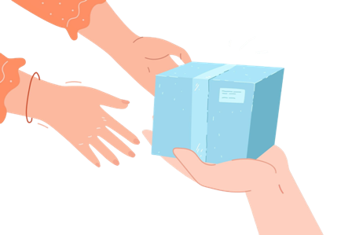
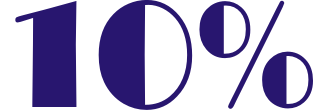
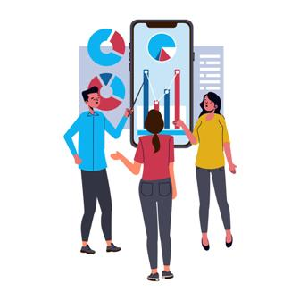
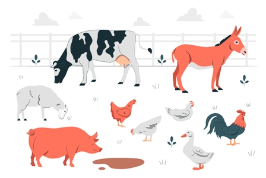
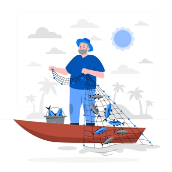
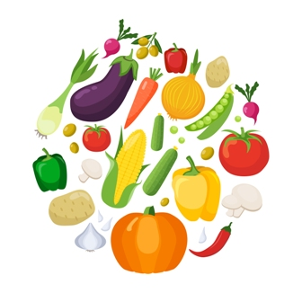

So now you have been thinking for awhile on how to make more money to live a comfortable life.
"There are many ways to kill a cat", so the adage goes.
This literally means that there are so many ways to make more money.
The question is, does that way smell of illegality? Does society frown upon that way? Does taking that get in the way of
someone else?
What I have compiled below is a list of twenty (20) legal, positive and scriptural ways of increasing your money.
Increasing your money here means making your money work for you and gaining profits in return.
Now let's go:
1. Giving
The first and best way to increase your money is through giving.
Don't be surprised.
Luke 6:38 says "Give, and it shall be given unto you; good measure, pressed down, and shaken together, and running over, shall men give into your bosom..."
This is a spiritual law that cannot be argued.
What you should know and understand is that almost all wealthy people you know of were and are still givers.
So go ahead. Give out your money for free and see your money increase.
2. Tithing
Tithing is a biblical principle of sacrificial giving.
Tithing can be explained as the act of giving a percentage (1/10) of your income back to God's work. Tithing comes with a promise and this is well portrayed in Malachi 3:10 as follows:
"Bring all the tithes into the storehouse, that there may be food in My house, And try Me now in this," Says the LORD of hosts, "If I will not open for you the windows of heaven and pour out for you such blessing that there will not be room enough to receive it."
There you have it. Be a regular tither and see your money increase.
3. Savings
There are abundant savings account schemes in Ghana.
Every bank offers it.
There are micro savings organizations also who offer same.
Savings involve keeping your money in a bank or its alternative for a period of time as agreed on by both parties with interest.
The downside to savings is with its returns as one should not expect to earn so much from this scheme.
Notwithstanding, savings are very safe and not subject to market volatility.
4. Fixed Deposit
One way to increase your money is by engaging in Fixed Deposit investment.
Fixed deposit can be explained as an investment opportunity where money is deposited for a fixed period with fixed interest rate.
Fixed deposits offer higher interest rates as compared to ordinary savings investment.
The good news is that almost all well meaning banks in Ghana offer this investment opportunity.
5. Treasury Bills
How do you give a loan to a whole Central government?Through Treasury Bills.
A Treasury Bill is a short term debt security made available by the Bank of Ghana (BOG) which involves investing your money in a fixed portfolio for a stipulated period and earning interest on your capital.
To increase your money, you can take the 91-day, 182-day or 365-day options.
6. Bonds
Bonds which are sometimes referred to as debt securities, are an obligation by one party to make payment(s) to another party in the future.These payments come in the form of interests which may be fixed or variable.
Bonds are bought and sold on GFIM only through Banks and Licensed Dealing Members also known as Brokers.
The two main bond issuers are the government of Ghana and public companies.
There you have it. Invest in bonds and increase your money.
Check this post on bond investments to know more.
7. Shares
Shares can be explained as money given by an investor to a company when he or she invest in that company.
When you buy shares, you become a part-owner (shareholder) of that company.
You earn dividends (profit) as a shareholder.
This profit is the increase on your money invested.
8. Trading Cryptocurrency

A cryptocurrency is a digital or virtual form of money that operate on decentralized networks based on blockchain technology unlike traditional currencies issued by governments (known as fiat currencies).
You can buy and sell cryptocurrencies in Ghana through exchanges (trading platforms) such as Binance and OKX.
To increase your money, you need to buy low and sell high and this requires experience and patience.
Check this post on cryptocurrencies to know more.
9. Staking Cryptocurrency
Staking cryptocurrency can be explained as a process where you lock up your crypto assets for a fixed period to support the operations and security of a blockchain network.In return, you earn rewards, usually in the form of additional cryptocurrency.
This can be sold on the market to increase your money.
10. Buying and Holding Cryptocurrency
Another way to increase your money is to simply buy cryptocurrencies and hold them.Holding here means not selling them and anticipating an increase in value.
Consequently, an increase in value will mean an increase in your money.
11. Setting Up A Business
You can greatly increase your money by engaging in business activities.This could be a provision of a service or the production of something physical.
One key requirement with this is to make sure the activity has the ability to earn profits. Ignore this to your own loss.
Business setups that provide solutions to societal problems are the most successful and anyone who engages in such activities are greatly rewarded.
12. Rearing Animals
Even though this can be done in a business setting, rearing animals can also be done wihtout any formalized structures.
For instance, you buy a kid goat at GHS50, carefully raise it into an adult goat and sell it for GHS400.
That's an increase in your money.
Animals that are fast selling include cattle, sheep, goats, chicken, guinea fowl and pigs.
13. Fish Farming
Even though this requires a high initial capital to start, fish farming is a sure way to boost your money.
Reason? The demand for fish far outweighs the supply.
Fish farming in Ghana can be done by constructing a pond or setting a pond on a water body.
14. Growing Crops
Whilst this, in times past, was considered a job for the impoverished, farming is now a great investment opportunity with capability of great returns.
There are two ways to do this:
First is sponsor the weeding, planting and final harvesting of crops.
The second is buying the produce right after harvest, storing them for awhile and selling for a high price when there is market shortage.
15. Land Acquisition
Land appreciates with time and this is why it is a good investment opportunity.Depending on the location, a land bought a decade ago will now go for triple or quadruple of its initial value.
In Ghana where the population is still growing, land aqcuisition presents an opportunity.
What opportunity if you may ask?
An opportunity to increase your money.
16. Real Estate
Even though this may include land, it is important we separate them due to how our lands system work.
Real estate can be explained as land and any permanent structures on it, such as houses, apartments, offices, hotels, warehouses and factories.
You can buy, sell, rent or develop real estate for various purposes.
Real estate has great potentials to appreciate in value and generate income through rent.
This is a great way to increase your money.
17. Soft Loans
Soft loans can be explained as the act of giving out needed help (money) to people for a returns as interest.
This activity is not formalised and is unregulated.
This means that you can only give out soft loans to people you trust since no law will back you in the eventuality of a defualt by the loanee.
18. Cash Prizes
This can be likened to catching a big fish with a small worm.
Many organizations organize promotional activities that entice customers with the potential to make money when they buy a product or experience a service at a cost.
For example, a promotion for customers to buy a particular drink with a serial inscription and stand the chance to win cash prizes far above the cost of that drink.
19. Training and Education
Do you want to increase your money in a specific trade you are in?Get more training and education.
Training and education improves your knowledge set and this ultimately makes you more effective and efficient.
Effectiveness and efficiency results in reduced cost of production, reduced wastage and customer saftisfaction.
What then will all these do?
Increase your money.
20. Get Promoted
Getting promoted at your workplace is a guarantee that your salary will be increased.Is that not the reason why it is termed 'promotion'?
When you are promoted, you are moved to the next level that matches your competence and performance.
Your responsiblities increase and as such your entitlement also increase.
So improve yourself, work hard, get promoted and witness your money increase.
There you have it. These are some twenty (20) ways by which you can increase your money in Ghana.
Of course, you cannot undertake all but make every effort to engage in some as you will never regret for doing so.
I conclude by sounding a note of caution.
Investments carry risk of money loss. It beholds on you to carry out proper and diligent research before you engage in any financial or investment activity.


Comments